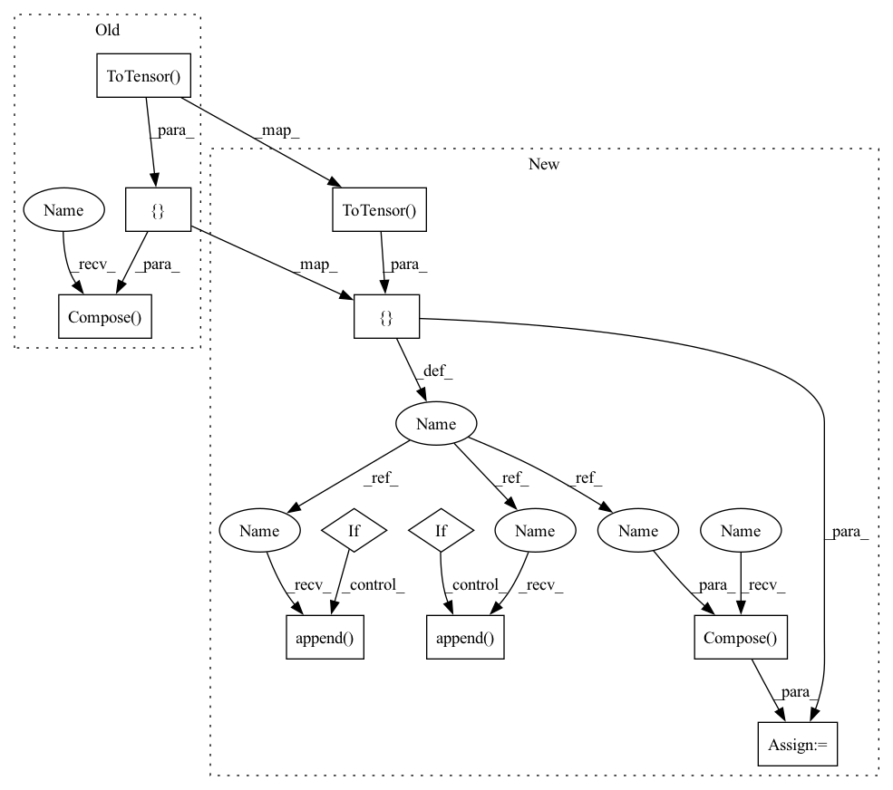

Pattern ID :40289
Before Change
self.n_instance = len(self.data)
def load(self):
transform = transforms.Compose([
transforms.ToTensor() ,
transforms.CenterCrop(self.center_crop),
transforms.Normalize((0.1307,), (0.3081,)),
transforms.Resize(self.resize))
if self.split == "train" or self.split == "valid":
train_valid = datasets.MNIST(self.root, train=True,
download=True, transform=transform)After Change
self.n_instance = len(self.data)
def load(self):
tran = [ transforms.ToTensor() ,
transforms.Normalize((0.1307,), (0.3081,))if not self.center_crop == 28:
tran.append( transforms.CenterCrop(self.center_crop))
if not self.resize == 28:
tran.append( transforms.Resize(self.resize))
transform = transforms .Compose(tran )
if self.split == "train" or self.split == "valid":
train_valid = datasets.MNIST(self.root, train=True,
download=True, transform=transform)In pattern: SUPERPATTERN
Frequency: 3
Non-data size: 11
Instances Fragment ID: 114231198
Project Name: mit-han-lab/pytorch-quantum
Commit Name: 44d7f5b2e4e0e95e9c4f383c13d651c2f5385937
Time: 2021-03-08
Author: hanrui@mit.edu
File Name: examples/core/datasets/mnist.py
M Class Name: MNISTDataset
N Class Name: MNISTDataset
M Method Name: load(1)
N Method Name: load(1)
M Parent Class:
N Parent Class:
M File Name: examples/core/datasets/mnist.py
N File Name: examples/core/datasets/mnist.py
M Start Line: 28
M End Line: 33
N Start Line: 34
N End Line: 65
Before Change
def get_training_data_loader(training_config):
transform = transforms.Compose([
transforms.Resize(training_config["image_size"]),
transforms.CenterCrop(training_config["image_size"]),
transforms.ToTensor() ,
transforms.Normalize(mean=IMAGENET_MEAN_1, std=IMAGENET_STD_1))
train_dataset = datasets.ImageFolder(training_config["dataset_path"], transform)
sampler = SequentialSubsetSampler(train_dataset, training_config["subset_size"])
train_loader = DataLoader(train_dataset, batch_size=training_config["batch_size"], sampler=sampler)
print(f"Using {len(train_loader)*training_config["batch_size"]*training_config["num_of_epochs"]} datapoints (MS COCO images) for transformer network training.")After Change
including using 0..255 range (without any normalization) images during transformer net training,
keeping the options if somebody wants to play and get better results.
transform_list = [ transforms.Resize(training_config["image_size"]),
transforms.CenterCrop(training_config["image_size"]),
transforms.ToTensor() ]
if is_255_range:
transform_list.append( transforms.Lambda(lambda x: x.mul(255)))
if should_normalize:
transform_list.append( transforms.Normalize(mean=IMAGENET_MEAN_255, std=IMAGENET_STD_NEUTRAL) if is_255_range else transforms.Normalize(mean=IMAGENET_MEAN_1, std=IMAGENET_STD_1))
transform = transforms.Compose( transform_list)
train_dataset = datasets.ImageFolder(training_config["dataset_path"], transform)
sampler = SequentialSubsetSampler(train_dataset, training_config["subset_size"])
train_loader = DataLoader(train_dataset, batch_size=training_config["batch_size"], sampler=sampler) Fragment ID: 114231197
Project Name: gordicaleksa/pytorch-neural-style-transfer-fast
Commit Name: f074eb4127eb9b788f8f24ab90838109943132c8
Time: 2020-05-29
Author: gordicaleksa@gmail.com
File Name: utils/utils.py
M Class Name: AnonimousClass
N Class Name: AnonimousClass
M Method Name: get_training_data_loader(3)
N Method Name: get_training_data_loader(1)
M Parent Class:
N Parent Class:
M File Name: utils/utils.py
N File Name: utils/utils.py
M Start Line: 98
M End Line: 106
N Start Line: 101
N End Line: 114
Before Change
self.n_instance = len(self.data)
def load(self):
transform = transforms.Compose([
transforms.ToTensor() ,
transforms.CenterCrop(self.center_crop),
transforms.Normalize((0.1307,), (0.3081,)),
transforms.Resize(self.resize))
if self.split == "train" or self.split == "valid":
train_valid = datasets.MNIST(self.root, train=True,
download=True, transform=transform)After Change
self.n_instance = len(self.data)
def load(self):
tran = [ transforms.ToTensor() ,
transforms.Normalize((0.1307,), (0.3081,))if not self.center_crop == 28:
tran.append( transforms.CenterCrop(self.center_crop))
if not self.resize == 28:
tran.append( transforms.Resize(self.resize))
transform = transforms.Compose( tran)
if self.split == "train" or self.split == "valid":
train_valid = datasets.MNIST(self.root, train=True,
download=True, transform=transform) Fragment ID: 114231196
Project Name: mit-han-lab/torchquantum
Commit Name: 44d7f5b2e4e0e95e9c4f383c13d651c2f5385937
Time: 2021-03-08
Author: hanrui@mit.edu
File Name: examples/core/datasets/mnist.py
M Class Name: MNISTDataset
N Class Name: MNISTDataset
M Method Name: load(1)
N Method Name: load(1)
M Parent Class:
N Parent Class:
M File Name: examples/core/datasets/mnist.py
N File Name: examples/core/datasets/mnist.py
M Start Line: 28
M End Line: 33
N Start Line: 34
N End Line: 65